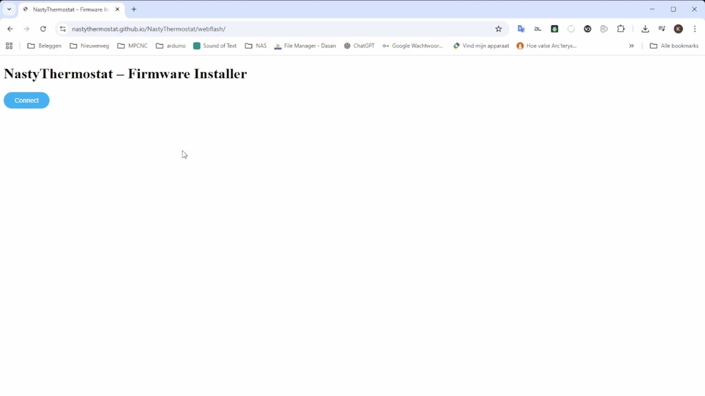
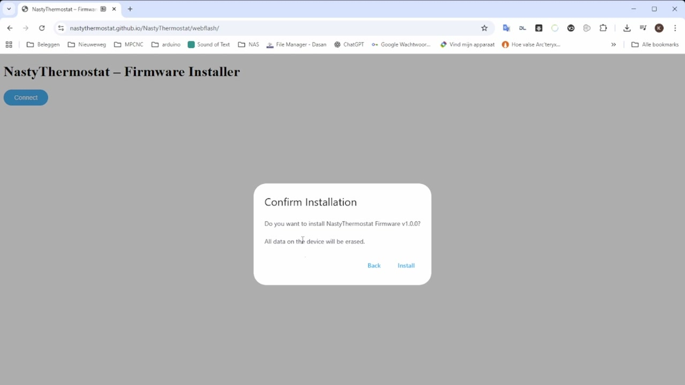
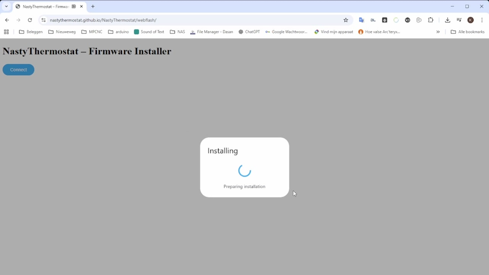
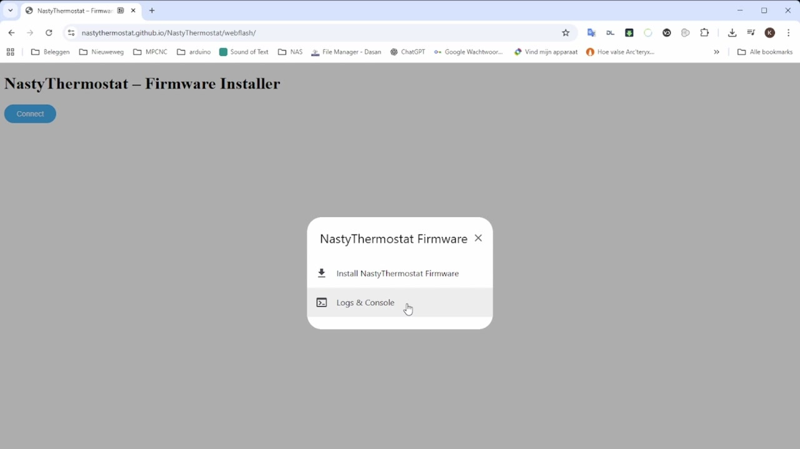
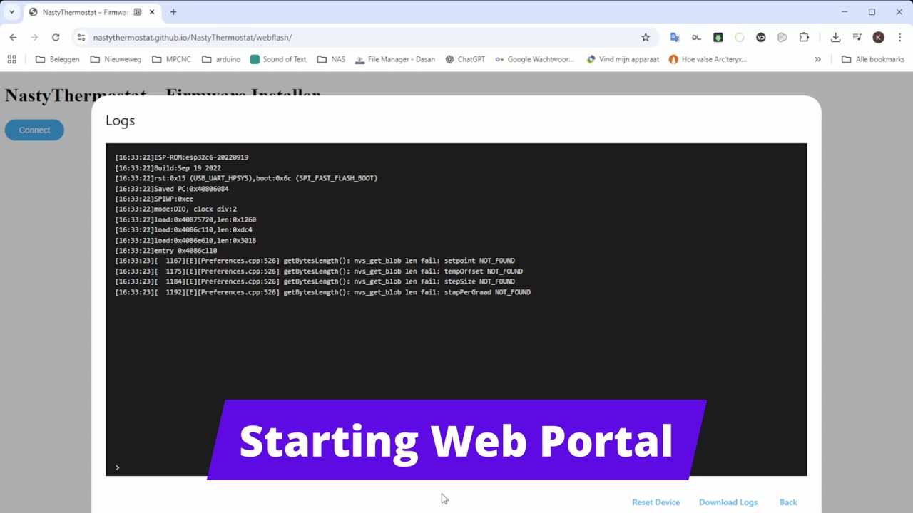
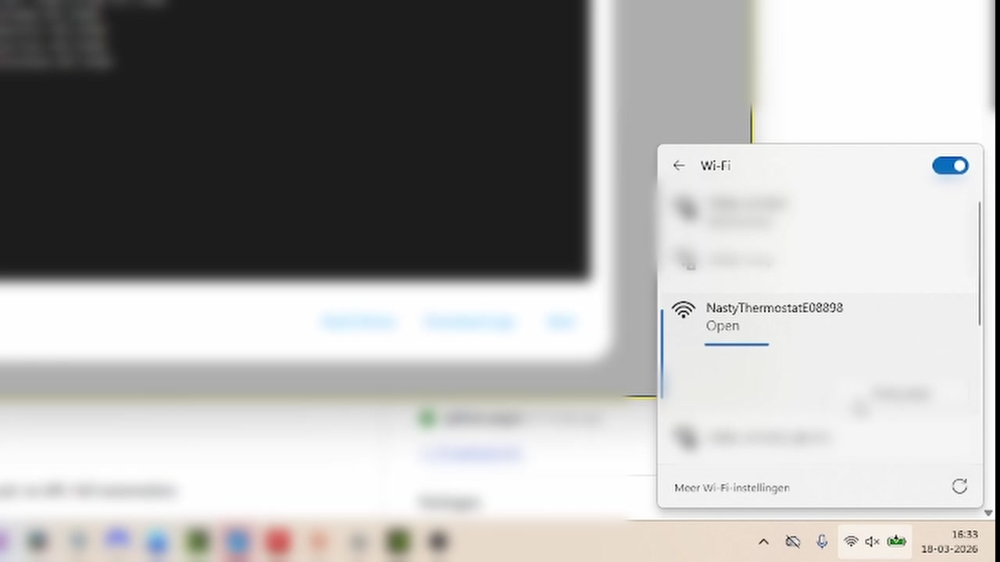
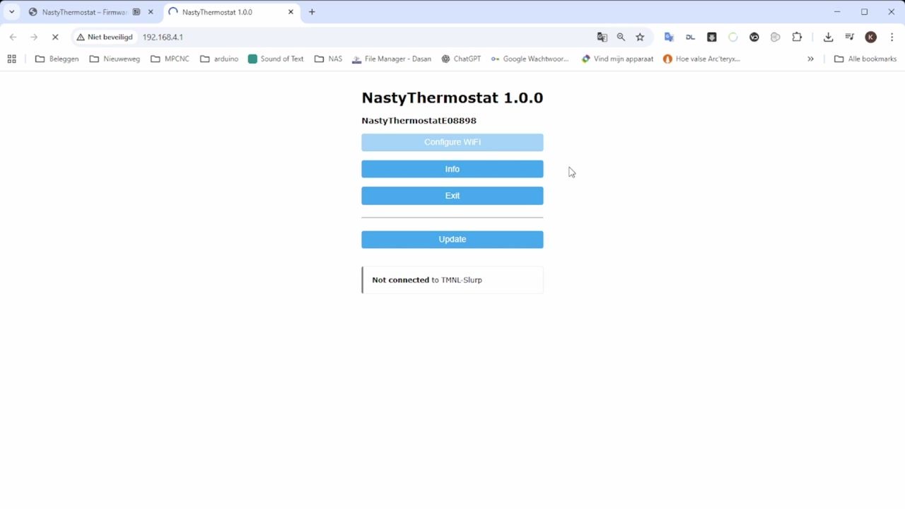
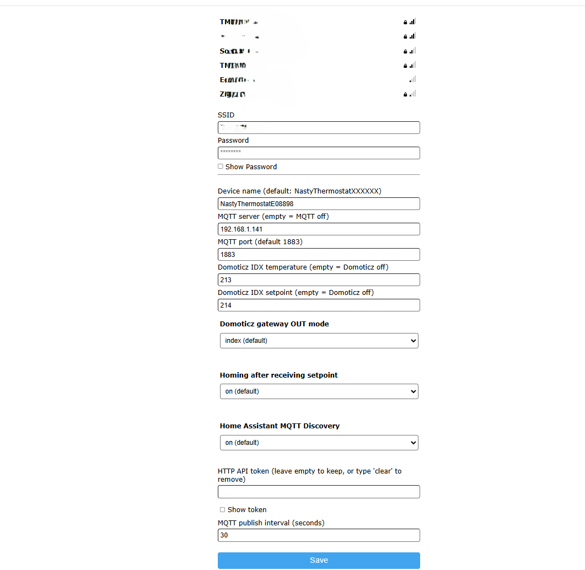
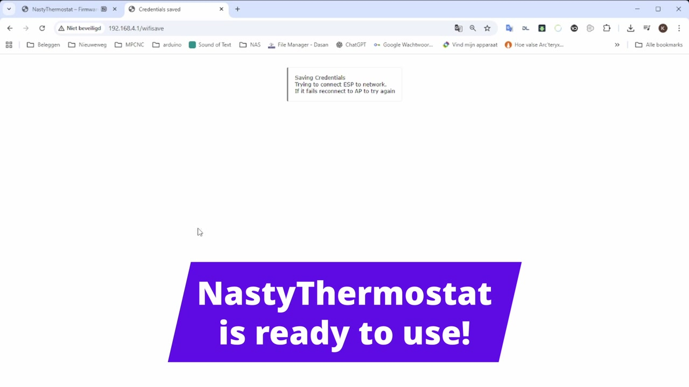

Firmware &
Configuration
Install the firmware via the webflasher and configure WiFi, MQTT and all other settings.
Part 1 — Installing the Firmware
Open the webflasher
Connect the NastyThermostat to your computer via USB. Then open Chrome or Edge and go to:
https://nastythermostat.cc/webflashClick the Connect button.

Select the device
A pop-up appears with available serial ports. Select the port of the ESP32-C6 (usually "USB Serial" or "CP210x") and click Connect.
Confirm the installation
The webflasher automatically detects the device and shows a confirmation dialog: "Confirm Installation — Do you want to install NastyThermostat Firmware v1.0.0?". Click Install.

Wait for the installation
The firmware is now being written to the device. This takes approximately 1–2 minutes. Keep the browser page visible — this prevents slowdown.

Installation complete
Afterwards the menu appears with two options: "Install NastyThermostat Firmware" and "Logs & Console". Click Logs & Console to verify the device booted correctly.

Check the logs
The logs show the boot messages of the ESP32. At the bottom "Starting Web Portal" appears — this means the NastyThermostat has created its own WiFi network for configuration.

Part 2 — Configuring WiFi
Connect to the NastyThermostat network
Open the WiFi settings on your computer or phone. You will see a network appear named "NastyThermostatE08898" (the last digits are the MAC address of your device). Click Connect.

Open the configuration portal
Windows automatically shows a notification "Action required, no internet" with the button "Open browser and connect". Click this, or navigate manually to 192.168.4.1 in your browser.
You now see the WiFiManager portal of the NastyThermostat. Click Configure WiFi to continue.

Part 3 — Configuring Settings
WiFi and basic MQTT settings
The configuration page shows a list of available WiFi networks at the top. Below is a description of all fields:

NastyThermostatXXXXXXNastyThermostatE08898/out/temp) and as the hostname on the network. When using multiple thermostats, each must have a unique name.Empty = MQTT disabled192.168.1.141). If this field is empty, no MQTT connection is made and Domoticz and Home Assistant will also not be active.1883Empty = Domoticz disabledEmpty = Domoticz disabledindexononEmpty = current token unchangedclear to remove the token and block write access.30 secondsSave
Click the Save button. The NastyThermostat saves the settings and attempts to connect to your WiFi network.

Your computer disconnects from the NastyThermostat network and the NastyThermostat automatically connects to your own WiFi. The NastyThermostat is now ready to use.